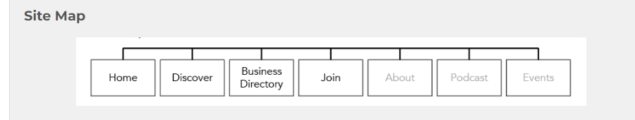
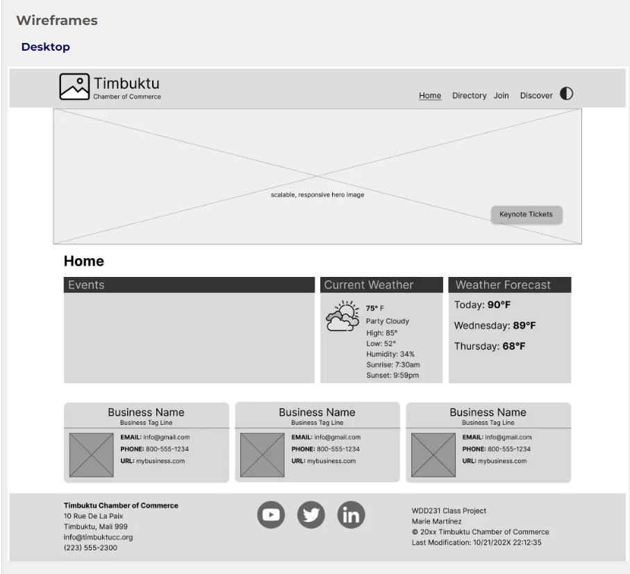
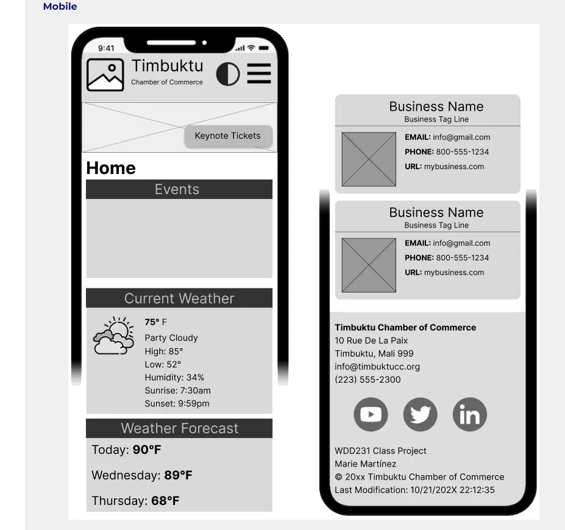

Gaborone Chamber of Commerce Website Plan
Site Name
Gaborone Chamber of Commerce
This name reflects the focus on businesses in Gaborone, emphasizing the target audience and geographical area of the site.
Site Purpose
The website will serve as a comprehensive resource hub for businesses in Gaborone, providing essential information on local events, hosting networking opportunities, creating business directories, and encouraging local commerce. It aims to promote economic growth, support local businesses, and foster a sense of community among the businesses.
Scenarios
- Scenario 1: A local business owner is interested in joining the chamber to network with other business owners. They visit the website to find information on membership benefits, fees, and how to apply.
- Scenario 2: A community member is looking for upcoming events and workshops hosted by the chamber. They visit the website to browse the events calendar and register for activities.
Design Elements
Color Scheme
- Primary Color: #004080 (Used for headers, navigation menu, and key call-to-action buttons)
- Secondary Color: #E67E22 (Used for highlights, accent elements, and buttons)
- Background Color: #F2F2F2 (Used for the main background and sections)
- Text Color: #333333 (Used for main body text and content)
Typography
Font Family: Roboto
- Headings: Bold Roboto for clarity and emphasis
- Body Text: Regular Roboto for readability and consistency
Wireframes
Site Map
The site map outlines the main sections of the website, providing a clear structure for navigation.

Desktop View
This wireframe illustrates the layout of the home page for desktop users, showcasing the primary navigation and content areas.

Mobile View
This wireframe illustrates the layout of the home page for mobile users, optimizing the viewing experience for smaller screens.
